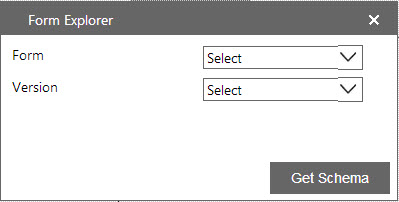
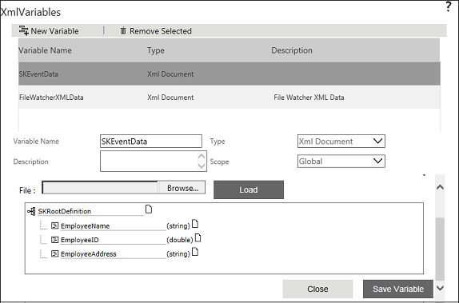

No
After a form is associated to a particular workflow, the form creates the XML Variable named SFFormData of type XML Document in the Start activity of that workflow. This will have the schema of the form.
AVEVA Work Tasks provides the Form Explorer icon to choose the form and its version. This icon will get displayed only for XML Variable of type XMLDocument. Any XML Variable of type XML Document can now get its schema from any form and its version available in the Manage Forms List.


Before introducing, when some changes were done in the form, the XML Variable had to be deleted and the form had to be re-associated in order to get the updated list of controls.
Refer to the Lists and Forms Guide for more information on Lists and Forms.